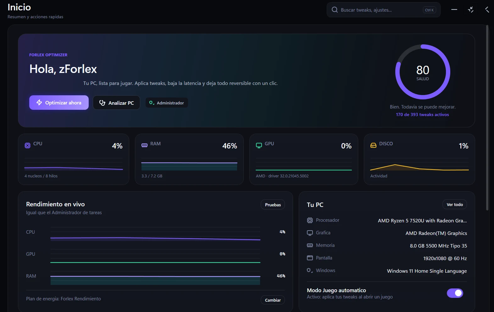
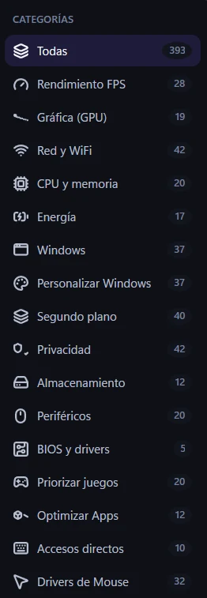

CEO & Fundador
PracPvP
2026 - Actualidad
Servidor de práctica PvP con soporte Java y Bedrock, premium y no premium.

Creador de Forlex Optimizer: 393 tweaks para dejar tu Windows listo para jugar, con reversión completa. Bots de Discord, plugins de Minecraft y comunidades desde 2023.
Soy Forlex, desarrollador de bots de Discord, plugins de Minecraft y herramientas para Windows. Empecé como staff en comunidades de Minecraft en 2023 y desde entonces no he parado: fundé y llevé a su versión final Útil Bot (v3.0.3), soy CEO de PracPvP y creo Forlex Optimizer, un optimizador nativo con 393 tweaks y reversión completa.
Me gusta construir cosas que cualquiera pueda usar sin complicaciones: que un jugador pueda optimizar su PC en un clic o que un servidor tenga sus sistemas funcionando el mismo día. Ahora mismo estoy abierto a trabajos de Minecraft de pago ($).
Encargos de Minecraft y desarrollo a medida. Trabajos de pago ($), presupuesto por proyecto.
Proyectos y equipos por los que he pasado desde 2023.
Servidor de práctica PvP con soporte Java y Bedrock, premium y no premium.
Plugins y optimización de servidores para Folia, Paper y Purpur, con soporte multithreading de alto rendimiento.
Optimizador nativo para Windows 10/11: 393 tweaks, perfiles automáticos y reversión completa.
Bot multifuncional para Discord, finalizado en su versión v3.0.3.
Servidor de Minecraft con diversas modalidades. Actualmente cerrado.
Servidor SMP con economía completa, sistema de clanes y eventos semanales.
Staff encargado del área de Practice, moderación y asistencia a jugadores.
Asistencia a jugadores, moderación de chat y soporte en eventos.
Un optimizador nativo para Windows 10/11 con 393 tweaks en 16 categorías. Aplica, mide y revierte todo con el mismo botón: cada cambio guarda el valor exacto anterior, así que nada se queda "tocado" para siempre.
Hecho en C# + WPF (.NET Framework 4.8), portable y ligero: 2.32 MB, sin
instalador, sin cuentas y sin telemetría. Todo ocurre en tu PC y cada operación queda
respaldada en %LOCALAPPDATA%\ForlexOptimizer.
Descarga directa desde GitHub, nunca desde mi PC.
Rendimiento FPS, GPU, red, CPU/RAM, energía, privacidad, almacenamiento, periféricos y más.
Antes de tocar el registro se guarda el valor exacto. "Deshacer" lo restaura tal cual estaba.
Puedes crear un punto de restauración de Windows antes de aplicar cualquier cambio.
Perfiles Competitivo, Streaming y Notebook en un clic. Los tweaks riesgosos nunca se aplican solos.
Detecta tu biblioteca de Steam, Epic o Battle.net: aplica el perfil al abrir el juego y revierte al cerrarlo.
Detecta NVIDIA, AMD o Intel, aplica ajustes con respaldo y permite restaurarlos después.
Salud del equipo, cuello de botella, driver de GPU, Hz reales del mouse, CPS, ping y más.
Aim trainer con 7 modos, mira overlay, widget flotante, test de escritura y conversor de sensibilidad.
5 temas, color de acento, fondos, densidad, perfil con nivel, logros y ajustes exportables.


Cada categoría muestra cuántos ajustes incluye y su nivel de riesgo: Seguro, Precaución o Riesgoso.
0 de 71 motores marcan el ejecutable como malicioso. Puedes abrir el análisis completo por su hash SHA-256 y comprobarlo tú mismo antes de descargar.
Cada tweak guarda el valor anterior exacto. Si algo no te convence, lo deshaces y queda como estaba.
No hay servidores propios ni conexiones de fondo: la app funciona 100% local, incluso sin internet.
Los cambios quedan respaldados en %LOCALAPPDATA%\ForlexOptimizer\backups.
Licencia MIT y código disponible en GitHub. Puedes revisar, compilar o proponer cambios.
Gratis, portable y sin instalador. El archivo se sirve desde GitHub (nunca desde mi PC), así que puedes descargarlo sin que nadie se conecte a nada.
17aab74c46f2bf0aea87fdae6a96d32868c18d2011cd38be7a85f107ef9b859c
Es normal: el archivo no tiene un certificado comercial de firma. Si SmartScreen lo bloquea, pulsa "Más información" y luego "Ejecutar de todas formas". El análisis de VirusTotal está arriba para que lo verifiques por hash.
Es un optimizador real: aplica cambios de registro y servicios. Léelo, prueba los tweaks seguros primero y crea un punto de restauración si quieres ir sobre seguro.
Espejo de respaldo en esta misma página: ForlexOptimizer.exe · portable .zip · hashes
Pulsa el botón principal. GitHub te entrega el archivo original (2.32 MB) con su hash SHA-256.
Optimizar servicios y registro necesita permisos de administrador. No requiere instalación.
"Optimizar todo" aplica un perfil completo; también puedes ir tweak por tweak con su nivel de riesgo.
Desde Backups o con el mismo botón devuelves cada cambio. Tu PC no queda "secuestrada".
Escríbeme por Discord (zforlex) y te digo qué perfil te conviene según tu equipo.
Sí. Es un proyecto con licencia MIT: puedes descargarlo, usarlo y ver el código sin pagar nada. Si te sirve, la mejor forma de apoyar es compartirlo.
El .exe es el programa suelto: lo ejecutas y listo. El .zip es el paquete portable completo con el lanzador, los scripts de instalación, la licencia y la documentación. Si tienes Smart App Control activo, usa el lanzador del zip (un doble clic en ForlexOptimizer.cmd).
Puede avisar porque no tiene firma comercial, no porque tenga algo malo. El análisis de VirusTotal muestra 0/71 detecciones y puedes comprobar el hash antes de abrirlo. Pulsa "Más información" → "Ejecutar de todas formas".
Todos los cambios se respaldan valor por valor y se revierten con el mismo botón. Los tweaks marcados como "Riesgoso" nunca se aplican automáticamente. Aun así, es un optimizador: usa los ajustes seguros primero y crea un punto de restauración si quieres cero riesgos.
Sí. Está hecho para Windows 10 y Windows 11 de 64 bits. Necesita permisos de administrador para aplicar la mayoría de tweaks de sistema.
No. No hay telemetría ni servidores propios: la app lee tu hardware con WMI y aplica cambios locales. Tus backups y ajustes se guardan en %LOCALAPPDATA%\ForlexOptimizer.
v3.0.3 CERRADO Bot multifuncional con configuración sencilla, sin necesidad de conocimientos técnicos. Proyecto finalizado — el desarrollo y el servicio quedaron descontinuados.
Útil Bot llegó a su versión v3.0.3 y cerró de forma definitiva: ya no se aceptan nuevas invitaciones ni se ofrece soporte del bot. La información queda aquí como parte de mi trayectoria; si buscas algo parecido o algo a medida, escríbeme y lo hablamos.
Personalizables
Warn, Mute, Ban
Autoroles
Calificaciones
Personalizados
Filtro palabras
Juego numérico
Autogestionable
¿Buscas un bot parecido o algo a medida? Escríbeme por Discord: zforlex.
Servidor de práctica PvP con soporte Java y Bedrock, premium y no premium.
Para dudas del optimizador, soporte de PracPvP o encargos de Minecraft.
Discord
Toca el usuario para copiarlo.
Estoy tomando encargos de Minecraft y desarrollo a medida. Trabajos de pago ($), con presupuesto según el proyecto.